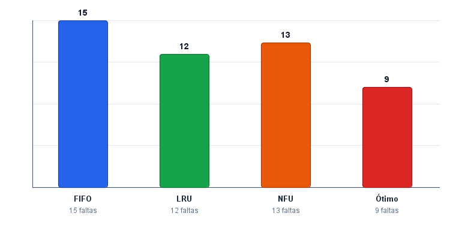

Este trabalho apresenta o desenvolvimento de um simulador, em linguagem Java, para a comparação de algoritmos de substituição de páginas utilizados no gerenciamento de memória virtual. Foram implementados quatro algoritmos clássicos — FIFO, LRU, NFU e Ótimo — sob uma mesma interface, permitindo executá-los com a mesma cadeia de referências e o mesmo número de quadros de memória física. O simulador oferece dois modos de uso: linha de comando (CLI), com a saída textual exigida no enunciado, e interface gráfica em Swing, com tabela de resultados e gráfico de barras comparativo. O caso clássico da literatura (cadeia 7 0 1 2 0 3 0 4 2 3 0 3 2 1 2 0 1 7 0 1 com 3 quadros) reproduziu os valores teóricos esperados (FIFO 15, LRU 12, Ótimo 9), validando a corretude da implementação e evidenciando a hierarquia de eficiência entre os algoritmos.
O gerenciamento eficiente da memória virtual é um dos pilares de desempenho de qualquer sistema operacional moderno. Quando a quantidade de páginas demandadas por um processo excede o número de quadros físicos disponíveis, o sistema precisa decidir qual página remover da memória para acomodar uma nova — decisão que tem impacto direto no número de faltas de página (page faults) e, consequentemente, no tempo de resposta do sistema, dado o custo de uma operação de E/S em disco.
Existem diversos algoritmos propostos na literatura para tratar essa decisão, cada um com diferentes compromissos entre simplicidade de implementação, custo computacional em tempo de execução e qualidade da escolha. Para que se possa avaliar empiricamente esses compromissos, este trabalho propõe um simulador que executa, sobre uma mesma cadeia de referências, quatro algoritmos representativos: FIFO (o mais simples), LRU (referência prática), NFU (baseado em frequência) e Ótimo (limite inferior teórico, não implementável em produção, mas útil como baseline de comparação).
A motivação central é didática: visualizar de forma direta como a escolha do algoritmo influencia a quantidade de faltas de página, e oferecer um instrumento que permita ao usuário submeter cadeias arbitrárias e número de quadros configurável.
O simulador foi desenvolvido em Java (JDK 11+), sem bibliotecas externas, utilizando apenas a Collections API e o toolkit Swing. A arquitetura foi construída em torno de uma interface comum, AlgoritmoSubstituicao, implementada por cada um dos quatro algoritmos, e de uma classe orquestradora SimuladorSubstituicao que executa todos os algoritmos sobre os mesmos parâmetros e retorna uma lista de ResultadoSimulacao. Essa estrutura permite que tanto a CLI (Main.java) quanto a GUI (SimuladorGUI.java) compartilhem a mesma lógica de simulação, sem duplicação.
src/ ├── Main.java # CLI / ponto de entrada ├── gui/ │ ├── SimuladorGUI.java # JFrame com inputs, tabela e gráfico │ └── GraficoComparativo.java # JPanel customizado (gráfico de barras) ├── simulator/ │ ├── SimuladorSubstituicao.java # Orquestrador │ ├── ResultadoSimulacao.java # POJO (nome do algoritmo, faltas) │ ├── EntradaSimulacao.java # Parsing/validação de entradas │ └── algoritmos/ │ ├── AlgoritmoSubstituicao.java # Interface comum │ ├── FIFO.java │ ├── LRU.java │ ├── NFU.java │ └── Otimo.java
A entrada do usuário consiste em dois dados: a cadeia de referências de páginas (uma sequência de inteiros separados por espaço) e o número de quadros de memória física disponíveis. A saída, em ambos os modos, é o número de faltas de página gerado por cada algoritmo. Na GUI, esse resultado é também exibido em um gráfico de barras comparativo.
A descrição funcional de cada algoritmo implementado é a seguinte:
LinkedList. A cada acesso, a página é movida para o final da lista; em uma falta, a página da cabeça (menos recentemente usada) é a removida. É computacionalmente mais caro que o FIFO, porém em geral mais eficiente, pois aproveita a localidade temporal das referências.A validação foi feita reproduzindo o caso clássico da literatura (cadeia 7 0 1 2 0 3 0 4 2 3 0 3 2 1 2 0 1 7 0 1, 3 quadros), cujos valores esperados — FIFO 15, LRU 12, Ótimo 9 — são amplamente referenciados em livros-texto da área (TANENBAUM, 2016).
A execução do simulador sobre a cadeia clássica e 3 quadros produziu o seguinte resultado:
| Algoritmo | Faltas de página |
|---|---|
| FIFO | 15 |
| LRU | 12 |
| NFU | 13 |
| Ótimo | 9 |

Os valores obtidos confirmam a hierarquia esperada da literatura. O algoritmo Ótimo, com 9 faltas, estabelece o limite inferior teórico — nenhum dos outros algoritmos consegue, nem poderia, igualá-lo, pois nenhum tem acesso ao futuro da cadeia. O LRU, com 12 faltas, é o mais próximo do Ótimo entre os algoritmos práticos, o que confirma o valor da heurística de localidade temporal: páginas usadas recentemente tendem a ser usadas novamente em breve, e portanto remover a "menos recentemente usada" é uma decisão de baixo risco. O NFU, com 13 faltas, ficou ligeiramente atrás do LRU; o resultado é coerente com sua principal limitação — o contador global tende a privilegiar páginas que foram muito acessadas no passado, mesmo que tenham parado de ser usadas. Por fim, o FIFO, com 15 faltas, foi o de pior desempenho, exatamente como esperado: por ignorar o padrão de uso, ele frequentemente remove páginas que ainda seriam úteis.
A diferença de 6 faltas entre o pior caso (FIFO) e o teórico ideal (Ótimo) — uma redução de 40% — ilustra concretamente o impacto que a escolha do algoritmo de substituição pode ter sobre o desempenho de um sistema real, justificando a complexidade adicional de algoritmos baseados em uso.
O simulador desenvolvido cumpre integralmente o objetivo proposto: implementa quatro algoritmos clássicos de substituição de páginas sob uma interface comum, executa-os sobre a mesma entrada e apresenta de forma clara o número de faltas de página de cada um, tanto em modo texto (CLI) quanto em uma interface gráfica com gráfico comparativo. A reprodução fiel dos valores clássicos da literatura para o caso de validação atesta a corretude da implementação. A hierarquia observada — Ótimo < LRU < NFU < FIFO em número de faltas — é consistente com o esperado pela teoria e evidencia que algoritmos sensíveis ao padrão de uso (LRU, NFU) entregam ganhos relevantes sobre estratégias puramente temporais (FIFO), ainda que ao custo de maior complexidade de implementação. Como evolução natural do trabalho, seria possível agregar outros dois algoritmos do enunciado (Relógio e Envelhecimento), permitir importação de cadeias de arquivo e gerar exportação dos resultados em CSV.
TANENBAUM, A. S.; BOS, H. Sistemas Operacionais Modernos. 4. ed. São Paulo: Pearson, 2016.
ORACLE. Java Platform, Standard Edition Documentation. Disponível em: https://docs.oracle.com/en/java/javase/. Acesso em: 8 maio 2026.
ORACLE. Creating a GUI With Swing — The Java Tutorials. Disponível em: https://docs.oracle.com/javase/tutorial/uiswing/. Acesso em: 8 maio 2026.
SDPM SIMULATOR. Simulator for Page Replacement Algorithms. Disponível em: https://sdpm-simulator.netlify.app. Acesso em: 8 maio 2026.
O código-fonte completo, juntamente com instruções detalhadas de compilação e execução (CLI e GUI), encontra-se no repositório do projeto no GitHub: https://github.com/Nelsolaa/trabalho_SO.